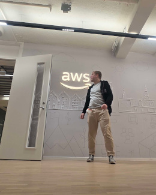
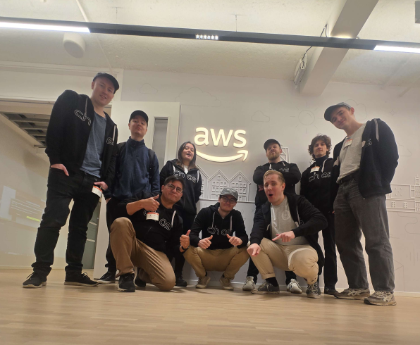
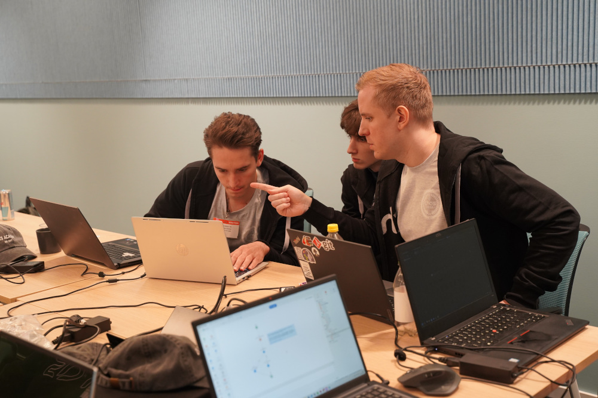
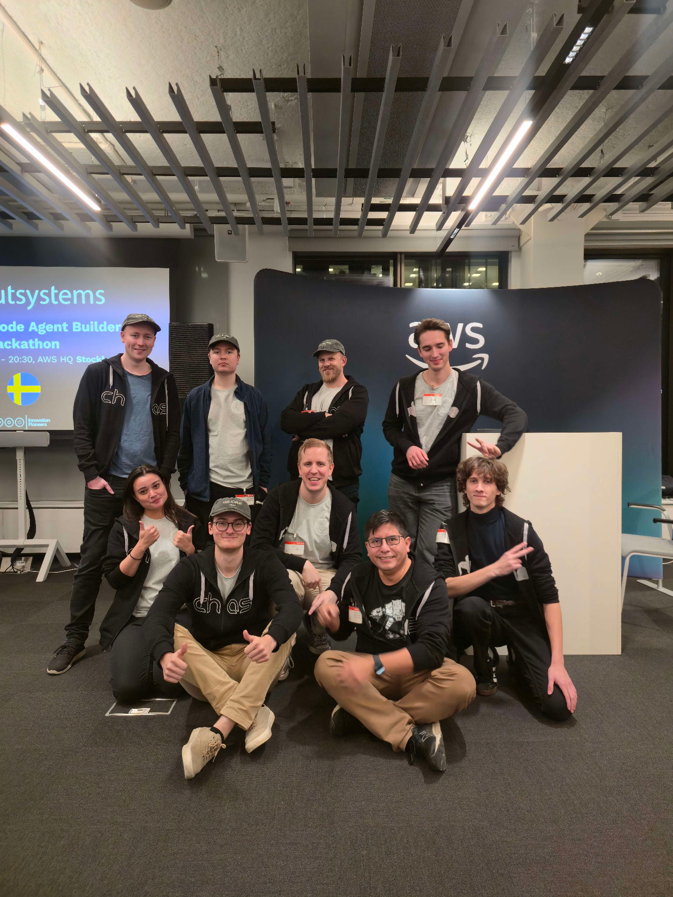

Automating Chaos into Code

I'm 8 weeks into an exciting 2-year DevOps Engineering program in Stockholm, Sweden. Passionate about cloud infrastructure, automation, and building reliable systems. Currently diving deep into containerization, CI/CD pipelines, and infrastructure as code.
Git, GitHub
Docker, Docker Compose
AWS: EC2, S3, IAM
Bash, Python
Linux: Ubuntu, Mint
Grafana, Prometheus
8 weeks into my 2-year program - here's what I've accomplished so far
Introduction to DevOps principles, version control with Git and GitHub. Created my first repositories and learned about branching strategies.
Deep dive into Docker containers, images, and Docker Compose. Built multi-container applications and learned about container orchestration basics.
Introduction to AWS services including EC2, S3, IAM, and VPC. Deployed first cloud applications and learned about cloud security best practices.
Participated in AWS-sponsored hackathon! Started learning about CI/CD pipelines, GitHub Actions, and automated testing. Building real-world projects.
Kubernetes, Terraform, Infrastructure as Code, monitoring with Grafana & Prometheus, and much more to learn in the next 96 weeks!
Real-world projects and hands-on experience

Participated in an AWS-sponsored hackathon, building cloud-native solutions with a focus on serverless architecture and scalability.
View on GitHub
Implemented a complete DevOps pipeline with automated testing, building, and deployment using GitHub Actions and Docker containers.
View on GitHub
Automated infrastructure deployment on AWS using Terraform and Ansible, managing EC2 instances, VPCs, and security groups.
View on GitHubHave a question or want to work together? Feel free to reach out! I'm always open to discussing new opportunities, collaborations, or just chatting about DevOps and cloud technologies.
Based in Stockholm, Sweden 🇸🇪
DevOps Engineering Student (Week 8/104)
Open to internships and collaboration
Always learning, always improving